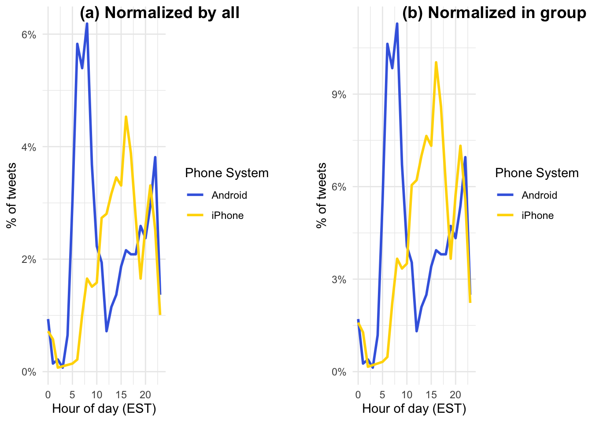
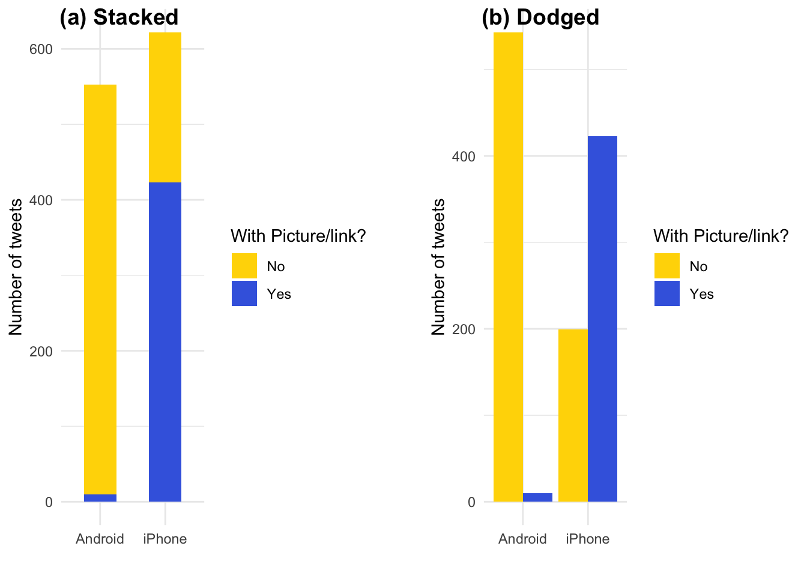
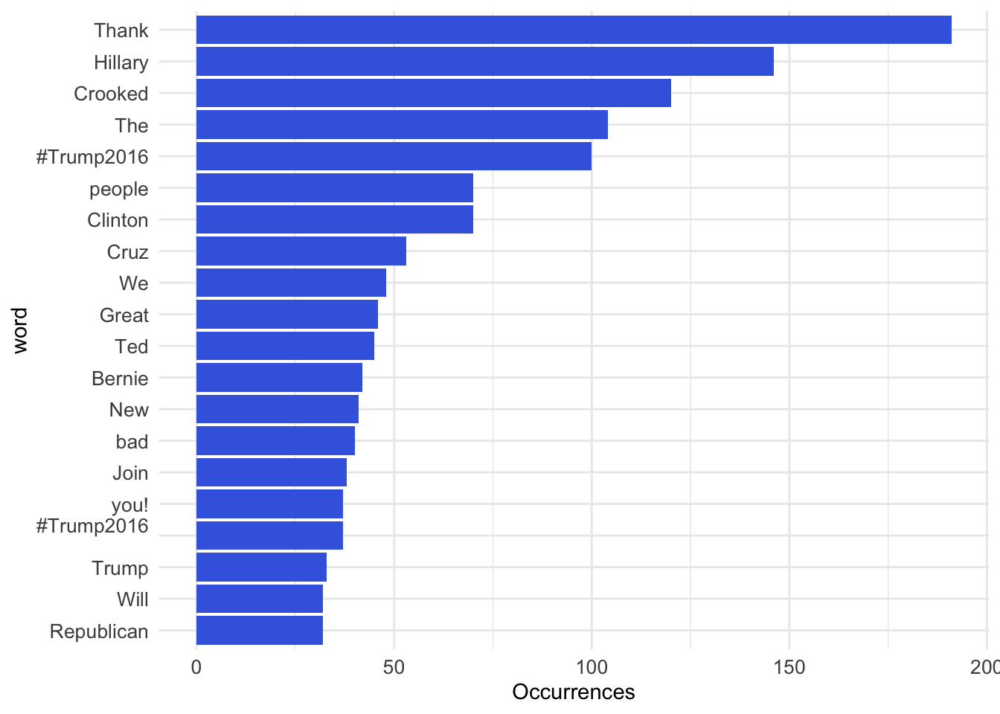
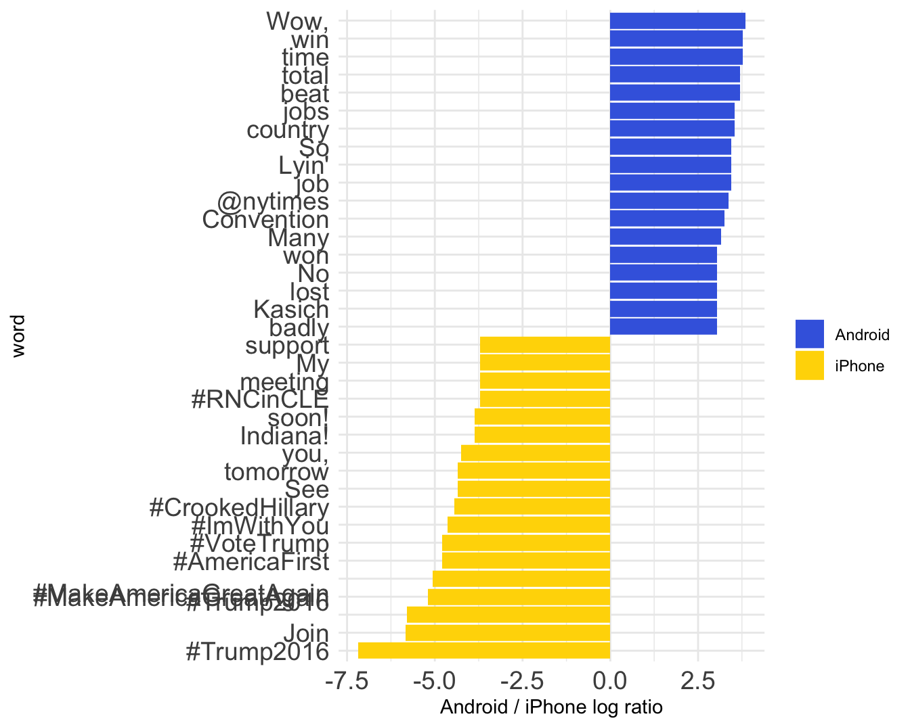

Chapter 12 Trump’s tweets
本範例取材自David Robinson的blog文章「Text analysis of Trump’s tweets confirms he writes only the (angrier) Android half」。David Robinson是「Text Mining with R」的共同作者， 可參考該書籍上的範例「7 Case study: comparing Twitter archives | Text Mining with R (tidytextmining.com)」。
這篇文章探討了美國前總統川普（Donald Trump）的推特帳號。有一個假設聲稱，當川普在推特上祝福奧運會選手好運時，他使用的是 iPhone ；當他侮辱競爭對手時，他通常是用 Android 來發推。文章作者想要透過數據分析來探討這個假設的真實性。
作者使用了文字探勘和情感分析等技術，從川普的推特內容入手，分析了不同時間和使用不同手機所發的推文。結果顯示，Android 和 iPhone 所發的推文顯然是由不同的人所發，他們在使用標籤、連結和轉推的方式上也不同。此外，Android 的推文更加憤怒和負面，而 iPhone 的推文則傾向於發佈善意的公告和圖片。整體而言，這些分析讓我們能夠區分出競選團隊所發佈的推文（iPhone）和川普自己所發佈的推文（Android）。
這個教學案例涵蓋了使用 R 語言進行社群輿論資料（tweets）的探索性分析的各種技術和工具。除了使用常見的資料處理套件 dplyr 和視覺化套件 ggplot 外，還使用了文字處理套件 stringr 和時間處理套件 lubridate，以及關鍵字分析技術 keyness。
透過這個教學案例，學習者可以掌握如何：
使用 dplyr 和 ggplot 進行資料處理和視覺化。
使用 stringr 和 extract() 進行文字處理，例如從文本中提取關鍵字。
使用 lubridate 進行時間處理，例如轉換時間格式和提取時間戳記。
學習關鍵字分析技術 keyness，以找出在不同文本之間對彼此相對突出的關鍵字。
這段程式碼是用來設計 ggplot2 的主題風格。作者首先定義了一個名為 th 的自訂主題，基於 ggplot2 的 theme_minimal() 主題，並設置了不同元素的字型、大小和樣式等屬性。接著，作者定義了一個名為 new_style() 的函數，用於更精細的主題風格設置，包括圖表標題、圖例、軸標籤和刻度標籤等。透過這些設置，可以讓 ggplot2 圖表更具有視覺吸引力，並強調重要的圖形元素，使圖表更加清晰易懂。這兩種方式都可以用來定義主題
library(tidyverse)
# library(lubridate) # has been included in tidyverse
options(scipen = 999)
# Self-designed theme
th <- theme_minimal() +
theme(plot.title = element_text(size=24, face="bold"),
legend.title = element_text(size=18, face="bold"),
legend.text = element_text(size=18),
axis.title = element_text(hjust=0.5, size=18, face="italic"),
axis.text = element_text(size=18)
)
# more settings
new_style <- function() {
font <- "Helvetica"
theme(
plot.title = element_text(family=font, size=28, face="bold"),
plot.subtitle = element_text(family=font, size=22,
margin=margin(9,0,9,0)),
plot.caption = element_blank(),
legend.position = "top",
legend.text.align = 0,
legend.background = element_blank(),
# legend.title = element_blank(),
legend.key = element_blank(),
legend.text = element_text(family=font, size=18, color="#222222"),
axis.text = element_text(family=font, size=18, color="#222222"),
axis.text.x = element_text(margin=margin(5, b = 10)),
axis.ticks = element_blank(),
axis.line = element_blank(),
panel.grid.minor = element_blank(),
panel.grid.major.y = element_line(color="#cbcbcb"),
panel.grid.major.x = element_blank(),
panel.background = element_blank(),
strip.background = element_rect(fill="white"),
strip.text = element_text(size = 22, hjust = 0)
)
}12.1 Loading data
load(url("http://varianceexplained.org/files/trump_tweets_df.rda"))
dim(trump_tweets_df)## [1] 1512 16names(trump_tweets_df)## [1] "text" "favorited" "favoriteCount" "replyToSN"
## [5] "created" "truncated" "replyToSID" "id"
## [9] "replyToUID" "statusSource" "screenName" "retweetCount"
## [13] "isRetweet" "retweeted" "longitude" "latitude"trump_tweets_df %>%
select(id, text, created, favoriteCount, retweetCount, statusSource) %>%
head(10)## # A tibble: 10 × 6
## id text created favor…¹ retwe…² statu…³
## <chr> <chr> <dttm> <dbl> <dbl> <chr>
## 1 762669882571980801 "My economic … 2016-08-08 15:20:44 9214 3107 "<a hr…
## 2 762641595439190016 "Join me in F… 2016-08-08 13:28:20 6981 2390 "<a hr…
## 3 762439658911338496 "#ICYMI: \"Wi… 2016-08-08 00:05:54 15724 6691 "<a hr…
## 4 762425371874557952 "Michael More… 2016-08-07 23:09:08 19837 6402 "<a hr…
## 5 762400869858115588 "The media is… 2016-08-07 21:31:46 34051 11717 "<a hr…
## 6 762284533341417472 "I see where … 2016-08-07 13:49:29 29831 9892 "<a hr…
## 7 762110918721310721 "Thank you Wi… 2016-08-07 02:19:37 19223 5784 "<a hr…
## 8 762106904436961280 ".@Larry_Kudl… 2016-08-07 02:03:39 19543 7930 "<a hr…
## 9 762104411707568128 "I am not jus… 2016-08-07 01:53:45 75488 24663 "<a hr…
## 10 762016426102296576 "#CrookedHill… 2016-08-06 20:04:08 23661 7903 "<a hr…
## # … with abbreviated variable names ¹favoriteCount, ²retweetCount,
## # ³statusSource12.2 Cleaning data
這段程式碼的目的是從一個叫做trump_tweets_df的data.frame中，選擇幾個欄位並且進行過濾和轉換，最後將結果存儲在一個名為tweets的新data.frame中。
extract()函數用於從statusSource欄位中提取出一個新欄位source，該欄位包含了statusSource中的Twitter for iPhone和Twitter for Android這兩種可能的字串。這裡使用了一個正則表達式Twitter for (.*?)<，該表達式表示提取出以Twitter for開頭，且在<符號之前的任意字元序列，並將結果存儲在名為source的新欄位中。
最後，filter()函數用於過濾出source欄位中值為iPhone或Android的記錄，並將過濾結果存儲在tweets資料框中。
# tidyr::extract()
# stringr::str_replace
trump_tweets_df$statusSource[1]## [1] "<a href=\"http://twitter.com/download/android\" rel=\"nofollow\">Twitter for Android</a>"tweets <- trump_tweets_df %>%
select(id, statusSource, text, created) %>%
# mutate(source = str_replace(statusSource,
# ".*Twitter for (.*?)<.*", "\\1")) %>%
# mutate(source = str_extract(statusSource, 'Twitter for (.*?)<')) %>% View
extract(statusSource, "source", "Twitter for (.*?)<") %>%
filter(source %in% c("iPhone", "Android"))
# Using stringr::str_replace() to mutate a new source variable, replacing tidyr::
# str(tweets)Practice. 有時候我們會希望避免用太多種套件來寫程式，例如上面的extract()便屬於tidyr的函式。事實上我們可以用stringr::str_replace()來達到這個目的。嘗試寫寫看？或者嘗試問ChatGPT看看？
Prompt. 我如果希望用stringr::str_replace來達到extract(statusSource, "source", "Twitter for (.*?)<") %>%的功能，我該怎麼寫？
mutate(source = stringr::str_replace(statusSource, ".*Twitter for (.*?)<.*", "\\1")) %>%
12.3 Visual Exploring
12.3.1 Productivity by time
hour = hour(with_tz(created, "EST"))這段程式碼使用了with_tz()函數將created欄位的時區轉換為"EST"所對應的時區，然後使用hour()函數提取出該日期時間對應的小時數，並將結果存儲在hour變數中。該程式碼會將例如"2023-04-12 12:30:00"轉換為美國東部標準時間對應的小時數，即12（因為12點30分所在的小時是12點）。他所取出的並非某日的12時，他就只是取出是12時。
toplot1和toplot2的差異在於對source欄位的分組處理不同。具體來說，toplot1中沒有對source欄位進行分組，而是在後面使用mutate()函數將計數結果中的n列和sum(n)相除，得到了百分比列percent。這導致計算的是整個資料集中的hour和source的計數和百分比。相反，toplot2中使用了group_by()函數將source欄位進行分組處理，並在後面使用mutate()函數和ungroup()函數計算了每個source和hour的計數和百分比，即分別計算了iPhone和Android的計數和百分比。因此，toplot1和toplot2的計算結果是不同的，前者的計算結果中包含了整個資料集的計數和百分比，而後者的計算結果則分別對iPhone和Android進行了計數和百分比的計算。
程式碼使用了ggplot()函數創建了一個ggplot2物件，並使用aes()函數設置了hour和percent欄位作為X軸和Y軸的變數，並且設置color = source表示以source欄位的值作為不同群組（iPhone vs. Android）折線的顏色。接著，程式碼使用geom_line()函數添加折線到圖中，設置了折線的粗細為1。使用scale_color_manual()函數設置了圖例的名稱為Phone System，標籤依照分組指定為為Android和iPhone，顏色分別為royalblue和gold，並使用scale_y_continuous()函數設置了Y軸刻度標籤的格式為百分比形式，即0%到100%之間的數值。注意：percent_format()並非ggplot2既有的函式，要另外安裝並匯入library(scales)。
library(scales) # for percent_format()
# lubridate::hour()
# lubridate::with_tz()
# scales::percent_format()
toplot1 <- tweets %>%
count(source, hour = hour(with_tz(created, "EST"))) %>%
# group_by(source) %>%
mutate(percent = n / sum(n))
# ungroup() %>%
toplot2 <- tweets %>%
count(source, hour = hour(with_tz(created, "EST"))) %>%
group_by(source) %>%
mutate(percent = n / sum(n)) %>%
ungroup()
p1 <- toplot1 %>%
ggplot() +
aes(hour, percent, color = source) +
geom_line(linewidth = 1) +
scale_color_manual(name = "Phone System",
labels = c("Android", "iPhone"),
values = c("royalblue", "gold")) +
scale_y_continuous(labels = percent_format()) +
labs(x = "Hour of day (EST)",
y = "% of tweets",
color = "") + theme_minimal()
p2 <- toplot2 %>%
ggplot() +
aes(hour, percent, color = source) +
geom_line(linewidth = 1) +
scale_color_manual(name = "Phone System",
labels = c("Android", "iPhone"),
values = c("royalblue", "gold")) +
scale_y_continuous(labels = percent_format()) +
labs(x = "Hour of day (EST)",
y = "% of tweets",
color = "") + theme_minimal()
cowplot::plot_grid(
p1, NULL, p2,
labels = c("(a) Normalized by all", "", "(b) Normalized in group"),
nrow = 1, rel_widths = c(1, 0.1, 1)
)
12.3.2 Tweeting with figures
首先，filter()函數用於從tweets資料框中過濾出不以"字符開頭的推文，即過濾掉引號開頭的推文。這裡使用了!str_detect(text, '^"')表示將text欄位中以"字符開頭的推文過濾掉，即保留那些不以引號開頭的推文。'^"'是一個正規表示式（Regular Expression），'^'符號代表字串的開頭。
接著，mutate()函數用於在tweets資料框中添加一個新欄位picture，該欄位根據推文中是否包含t.co字串來判斷推文中是否包含圖片或者連結。具體來說，這裡使用了if_else()函數，如果text欄位中包含t.co字串，則將picture欄位設置為"Picture/link"，否則設置為"No picture/link"。
最後，使用count()函數計算tweets資料框中每個source和picture的記錄數，並將結果存儲在toplot資料框中。最終的結果是一個展示tweets資料框中source和picture的記錄數的資料框，其中picture欄位表示推文中是否包含圖片或連結。
p1和p2的主要區別在於barplot的呈現方式不同。具體來說：
p1中使用了position="stack"的參數，表示將不同分組的bar疊加在一起，以展示每個source的總推文數量，並且bar的寬度設置為0.5（使用width參數），使得bar之間有一定的間隔。這種方式可以方便地比較不同source的總推文數量，並且可以看到每個source中有多少推文包含圖片或連結。p2中使用了position="dodge"的參數，表示將不同分組的bar並排放置，以便比較不同source中包含或不包含圖片或連結的推文數量。這種方式可以顯示出每個source中有多少推文包含或不包含圖片或連結，並且可以清楚地比較不同source之間的差異。
toplot <- tweets %>%
filter(!str_detect(text, '^"')) %>%
mutate(picture = if_else(str_detect(text, "t.co"),
"Picture/link", "No picture/link")) %>%
count(source, picture)
p1 <- toplot %>%
ggplot() +
aes(source, n, fill = picture) +
geom_col(position="stack", width = 0.5) +
scale_fill_manual(name = "With Picture/link?",
labels = c("No", "Yes"),
values = c("gold", "royalblue")) +
labs(x = "", y = "Number of tweets", fill = "") + theme_minimal()
p2 <- toplot %>%
ggplot() +
aes(source, n, fill = picture) +
geom_col(position="dodge") +
scale_fill_manual(name = "With Picture/link?",
labels = c("No", "Yes"),
values = c("gold", "royalblue")) +
labs(x = "", y = "Number of tweets", fill = "") + theme_minimal()
cowplot::plot_grid(
p1, NULL, p2,
labels = c("(a) Stacked", "", "(b) Dodged"), nrow = 1, rel_widths = c(1, 0.1, 1)
)
12.4 Keyness
Keyness是一種文本分析方法，用於比較兩個文本集合中某些詞彙的使用頻率（例如我們要比較用iPhone和Android兩支手機所發表的內容是否有文字上的差異），以評估這些詞彙在不同文本集合中的重要性或關鍵程度。Keyness分析通常用於比較兩個文本集合，其中一個是目標文本集合，另一個是參照文本集合，並且通常會將這些文本集合中的單詞或詞彙按照出現頻率排序。
使用
filter()函數過濾出不以"字符開頭的推文，即過濾掉引號開頭的推文，將結果存儲在tweets資料框中。使用
mutate()函數將推文中的URL和&字符替換為空白字符，即將推文中的網址和HTML實體轉換為正常的字符，方便後續的文本處理。使用
mutate()函數將tweets資料框中的text欄位拆分為單詞序列，存儲在word欄位中。這裡使用了str_split()函數將每個推文按照空格進行拆分，得到一個由單詞序列組成的列表，然後將這個列表存儲在word欄位中。使用
select()函數選擇需要的欄位，包括tweets資料框中的id、text和word欄位，以及tweets資料框中的所有其他欄位。使用
unnest()函數將word欄位中的單詞序列展開成一個單詞資料框，每個單詞對應一行記錄。使用
filter()函數過濾掉停用詞和非英文字符，其中停用詞（stop words）列表存儲在stop_words資料框中，通過!word %in% stop_words$word條件過濾掉停用詞，並且通過str_detect(word, "[a-z]")條件過濾掉不包含英文字母的單詞。最終，將結果存儲在tweets資料框中。
停用詞（stop words）指的是在文本中出現頻率非常高，但對於文本的內容和意義貢獻不大的詞彙。這些詞彙通常是一些常見的介詞、連詞、代詞、冠詞、助動詞等，例如”the”、“and”、“a”、“in”等。在文本分析中，停用詞通常被過濾掉，以便更好地捕捉文本中的主題和意義。在中文文本分析中，常見的停用詞包括一些虛詞、代詞、介詞、助詞等，例如”的”、“是”、“在”、“和”、“了”、“一”等。這些詞在中文文本中出現的頻率非常高，但對於文本的內容和意義貢獻不大，因此在文本分析中通常被過濾掉。
停用詞的列表通常是由人為構建的，根據具體的文本分析任務和文本的特徵來決定。在自然語言處理中，通常會使用預先定義好的停用詞列表，例如英文中的NLTK（Natural Language Toolkit）庫中就包含了一個預先定義好的停用詞列表。
在進行文本分析時，過濾掉停用詞可以幫助減少文本資料的雜訊和冗余訊息，提高分析的準確性和效率。但是，在某些特定的文本分析任務中，停用詞可能具有一定的重要性，例如情感分析中的否定詞（如”not”）可能對情感分析的結果產生重要的影響，因此需要特殊處理。如果進行的是網絡舆情分析，那麼一些特定的網絡用語和表情符號可能也需要被加入停用詞列表中，以避免對分析結果產生干擾。
unnest_tokens()和mutate()函數都可以用於將文本data.frame中的文本數據進行分詞處理，但它們的實現方式有所不同。mutate()函數使用str_split()函數將每個文本按照指定的分隔符（如上述程式碼即以空白" "做為分隔符號）進行拆分，得到一個由單詞序列組成的list。這樣做的缺點是無法同時將文本中的標點符號、空格、停用詞等過濾掉，因此在進行文本分析時需要額外進行過濾處理。
unnest_tokens()函數則使用更靈活的正則表達式（regex）來指定單詞的分割方式，可以將文本中的單詞、標點符號、空格等都分割開來，並且可以通過指定特定的正則表達式來過濾停用詞、非英文字符等。unnest_tokens()函數還可以將分割後的單詞list展開成一個單詞data.frame，每個單詞對應一行記錄，這樣更容易進行後續的文本分析和可視化。在unnest_tokens(word, text, token = "regex", pattern = "[^A-Za-z\\d#@']") %>%中，word表示新建的單詞欄位的名稱，text表示原始文本欄位的名稱，token表示使用的分割方式，這裡指定為正則表達式；pattern則是指定的正則表達式，其中[^A-Za-z\\d#@']表示匹配不屬於字母、數字、@、#、’的任意字符，即過濾掉非英文字符和一些標點符號。
library(tidytext) # unnest_tokens()
library(stringr) # str_detect(), str_replace_all()
# View(test)
stop_words$word## [1] "a" "a's" "able" "about"
## [5] "above" "according" "accordingly" "across"
## [9] "actually" "after" "afterwards" "again"
## [13] "against" "ain't" "all" "allow"
## [17] "allows" "almost" "alone" "along"
## [21] "already" "also" "although" "always"
## [25] "am" "among" "amongst" "an"
## [29] "and" "another" "any" "anybody"
## [33] "anyhow" "anyone" "anything" "anyway"
## [37] "anyways" "anywhere" "apart" "appear"
## [41] "appreciate" "appropriate" "are" "aren't"
## [45] "around" "as" "aside" "ask"
## [49] "asking" "associated" "at" "available"
## [53] "away" "awfully" "b" "be"
## [57] "became" "because" "become" "becomes"
## [61] "becoming" "been" "before" "beforehand"
## [65] "behind" "being" "believe" "below"
## [69] "beside" "besides" "best" "better"
## [73] "between" "beyond" "both" "brief"
## [77] "but" "by" "c" "c'mon"
## [81] "c's" "came" "can" "can't"
## [85] "cannot" "cant" "cause" "causes"
## [89] "certain" "certainly" "changes" "clearly"
## [93] "co" "com" "come" "comes"
## [97] "concerning" "consequently" "consider" "considering"
## [101] "contain" "containing" "contains" "corresponding"
## [105] "could" "couldn't" "course" "currently"
## [109] "d" "definitely" "described" "despite"
## [113] "did" "didn't" "different" "do"
## [117] "does" "doesn't" "doing" "don't"
## [121] "done" "down" "downwards" "during"
## [125] "e" "each" "edu" "eg"
## [129] "eight" "either" "else" "elsewhere"
## [133] "enough" "entirely" "especially" "et"
## [137] "etc" "even" "ever" "every"
## [141] "everybody" "everyone" "everything" "everywhere"
## [145] "ex" "exactly" "example" "except"
## [149] "f" "far" "few" "fifth"
## [153] "first" "five" "followed" "following"
## [157] "follows" "for" "former" "formerly"
## [161] "forth" "four" "from" "further"
## [165] "furthermore" "g" "get" "gets"
## [169] "getting" "given" "gives" "go"
## [173] "goes" "going" "gone" "got"
## [177] "gotten" "greetings" "h" "had"
## [181] "hadn't" "happens" "hardly" "has"
## [185] "hasn't" "have" "haven't" "having"
## [189] "he" "he's" "hello" "help"
## [193] "hence" "her" "here" "here's"
## [197] "hereafter" "hereby" "herein" "hereupon"
## [201] "hers" "herself" "hi" "him"
## [205] "himself" "his" "hither" "hopefully"
## [209] "how" "howbeit" "however" "i"
## [213] "i'd" "i'll" "i'm" "i've"
## [217] "ie" "if" "ignored" "immediate"
## [221] "in" "inasmuch" "inc" "indeed"
## [225] "indicate" "indicated" "indicates" "inner"
## [229] "insofar" "instead" "into" "inward"
## [233] "is" "isn't" "it" "it'd"
## [237] "it'll" "it's" "its" "itself"
## [241] "j" "just" "k" "keep"
## [245] "keeps" "kept" "know" "knows"
## [249] "known" "l" "last" "lately"
## [253] "later" "latter" "latterly" "least"
## [257] "less" "lest" "let" "let's"
## [261] "like" "liked" "likely" "little"
## [265] "look" "looking" "looks" "ltd"
## [269] "m" "mainly" "many" "may"
## [273] "maybe" "me" "mean" "meanwhile"
## [277] "merely" "might" "more" "moreover"
## [281] "most" "mostly" "much" "must"
## [285] "my" "myself" "n" "name"
## [289] "namely" "nd" "near" "nearly"
## [293] "necessary" "need" "needs" "neither"
## [297] "never" "nevertheless" "new" "next"
## [301] "nine" "no" "nobody" "non"
## [305] "none" "noone" "nor" "normally"
## [309] "not" "nothing" "novel" "now"
## [313] "nowhere" "o" "obviously" "of"
## [317] "off" "often" "oh" "ok"
## [321] "okay" "old" "on" "once"
## [325] "one" "ones" "only" "onto"
## [329] "or" "other" "others" "otherwise"
## [333] "ought" "our" "ours" "ourselves"
## [337] "out" "outside" "over" "overall"
## [341] "own" "p" "particular" "particularly"
## [345] "per" "perhaps" "placed" "please"
## [349] "plus" "possible" "presumably" "probably"
## [353] "provides" "q" "que" "quite"
## [357] "qv" "r" "rather" "rd"
## [361] "re" "really" "reasonably" "regarding"
## [365] "regardless" "regards" "relatively" "respectively"
## [369] "right" "s" "said" "same"
## [373] "saw" "say" "saying" "says"
## [377] "second" "secondly" "see" "seeing"
## [381] "seem" "seemed" "seeming" "seems"
## [385] "seen" "self" "selves" "sensible"
## [389] "sent" "serious" "seriously" "seven"
## [393] "several" "shall" "she" "should"
## [397] "shouldn't" "since" "six" "so"
## [401] "some" "somebody" "somehow" "someone"
## [405] "something" "sometime" "sometimes" "somewhat"
## [409] "somewhere" "soon" "sorry" "specified"
## [413] "specify" "specifying" "still" "sub"
## [417] "such" "sup" "sure" "t"
## [421] "t's" "take" "taken" "tell"
## [425] "tends" "th" "than" "thank"
## [429] "thanks" "thanx" "that" "that's"
## [433] "thats" "the" "their" "theirs"
## [437] "them" "themselves" "then" "thence"
## [441] "there" "there's" "thereafter" "thereby"
## [445] "therefore" "therein" "theres" "thereupon"
## [449] "these" "they" "they'd" "they'll"
## [453] "they're" "they've" "think" "third"
## [457] "this" "thorough" "thoroughly" "those"
## [461] "though" "three" "through" "throughout"
## [465] "thru" "thus" "to" "together"
## [469] "too" "took" "toward" "towards"
## [473] "tried" "tries" "truly" "try"
## [477] "trying" "twice" "two" "u"
## [481] "un" "under" "unfortunately" "unless"
## [485] "unlikely" "until" "unto" "up"
## [489] "upon" "us" "use" "used"
## [493] "useful" "uses" "using" "usually"
## [497] "uucp" "v" "value" "various"
## [501] "very" "via" "viz" "vs"
## [505] "w" "want" "wants" "was"
## [509] "wasn't" "way" "we" "we'd"
## [513] "we'll" "we're" "we've" "welcome"
## [517] "well" "went" "were" "weren't"
## [521] "what" "what's" "whatever" "when"
## [525] "whence" "whenever" "where" "where's"
## [529] "whereafter" "whereas" "whereby" "wherein"
## [533] "whereupon" "wherever" "whether" "which"
## [537] "while" "whither" "who" "who's"
## [541] "whoever" "whole" "whom" "whose"
## [545] "why" "will" "willing" "wish"
## [549] "with" "within" "without" "won't"
## [553] "wonder" "would" "would" "wouldn't"
## [557] "x" "y" "yes" "yet"
## [561] "you" "you'd" "you'll" "you're"
## [565] "you've" "your" "yours" "yourself"
## [569] "yourselves" "z" "zero" "i"
## [573] "me" "my" "myself" "we"
## [577] "our" "ours" "ourselves" "you"
## [581] "your" "yours" "yourself" "yourselves"
## [585] "he" "him" "his" "himself"
## [589] "she" "her" "hers" "herself"
## [593] "it" "its" "itself" "they"
## [597] "them" "their" "theirs" "themselves"
## [601] "what" "which" "who" "whom"
## [605] "this" "that" "these" "those"
## [609] "am" "is" "are" "was"
## [613] "were" "be" "been" "being"
## [617] "have" "has" "had" "having"
## [621] "do" "does" "did" "doing"
## [625] "would" "should" "could" "ought"
## [629] "i'm" "you're" "he's" "she's"
## [633] "it's" "we're" "they're" "i've"
## [637] "you've" "we've" "they've" "i'd"
## [641] "you'd" "he'd" "she'd" "we'd"
## [645] "they'd" "i'll" "you'll" "he'll"
## [649] "she'll" "we'll" "they'll" "isn't"
## [653] "aren't" "wasn't" "weren't" "hasn't"
## [657] "haven't" "hadn't" "doesn't" "don't"
## [661] "didn't" "won't" "wouldn't" "shan't"
## [665] "shouldn't" "can't" "cannot" "couldn't"
## [669] "mustn't" "let's" "that's" "who's"
## [673] "what's" "here's" "there's" "when's"
## [677] "where's" "why's" "how's" "a"
## [681] "an" "the" "and" "but"
## [685] "if" "or" "because" "as"
## [689] "until" "while" "of" "at"
## [693] "by" "for" "with" "about"
## [697] "against" "between" "into" "through"
## [701] "during" "before" "after" "above"
## [705] "below" "to" "from" "up"
## [709] "down" "in" "out" "on"
## [713] "off" "over" "under" "again"
## [717] "further" "then" "once" "here"
## [721] "there" "when" "where" "why"
## [725] "how" "all" "any" "both"
## [729] "each" "few" "more" "most"
## [733] "other" "some" "such" "no"
## [737] "nor" "not" "only" "own"
## [741] "same" "so" "than" "too"
## [745] "very" "a" "about" "above"
## [749] "across" "after" "again" "against"
## [753] "all" "almost" "alone" "along"
## [757] "already" "also" "although" "always"
## [761] "among" "an" "and" "another"
## [765] "any" "anybody" "anyone" "anything"
## [769] "anywhere" "are" "area" "areas"
## [773] "around" "as" "ask" "asked"
## [777] "asking" "asks" "at" "away"
## [781] "back" "backed" "backing" "backs"
## [785] "be" "became" "because" "become"
## [789] "becomes" "been" "before" "began"
## [793] "behind" "being" "beings" "best"
## [797] "better" "between" "big" "both"
## [801] "but" "by" "came" "can"
## [805] "cannot" "case" "cases" "certain"
## [809] "certainly" "clear" "clearly" "come"
## [813] "could" "did" "differ" "different"
## [817] "differently" "do" "does" "done"
## [821] "down" "down" "downed" "downing"
## [825] "downs" "during" "each" "early"
## [829] "either" "end" "ended" "ending"
## [833] "ends" "enough" "even" "evenly"
## [837] "ever" "every" "everybody" "everyone"
## [841] "everything" "everywhere" "face" "faces"
## [845] "fact" "facts" "far" "felt"
## [849] "few" "find" "finds" "first"
## [853] "for" "four" "from" "full"
## [857] "fully" "further" "furthered" "furthering"
## [861] "furthers" "gave" "general" "generally"
## [865] "get" "gets" "give" "given"
## [869] "gives" "go" "going" "good"
## [873] "goods" "got" "great" "greater"
## [877] "greatest" "group" "grouped" "grouping"
## [881] "groups" "had" "has" "have"
## [885] "having" "he" "her" "here"
## [889] "herself" "high" "high" "high"
## [893] "higher" "highest" "him" "himself"
## [897] "his" "how" "however" "i"
## [901] "if" "important" "in" "interest"
## [905] "interested" "interesting" "interests" "into"
## [909] "is" "it" "its" "itself"
## [913] "just" "keep" "keeps" "kind"
## [917] "knew" "know" "known" "knows"
## [921] "large" "largely" "last" "later"
## [925] "latest" "least" "less" "let"
## [929] "lets" "like" "likely" "long"
## [933] "longer" "longest" "made" "make"
## [937] "making" "man" "many" "may"
## [941] "me" "member" "members" "men"
## [945] "might" "more" "most" "mostly"
## [949] "mr" "mrs" "much" "must"
## [953] "my" "myself" "necessary" "need"
## [957] "needed" "needing" "needs" "never"
## [961] "new" "new" "newer" "newest"
## [965] "next" "no" "nobody" "non"
## [969] "noone" "not" "nothing" "now"
## [973] "nowhere" "number" "numbers" "of"
## [977] "off" "often" "old" "older"
## [981] "oldest" "on" "once" "one"
## [985] "only" "open" "opened" "opening"
## [989] "opens" "or" "order" "ordered"
## [993] "ordering" "orders" "other" "others"
## [997] "our" "out" "over" "part"
## [1001] "parted" "parting" "parts" "per"
## [1005] "perhaps" "place" "places" "point"
## [1009] "pointed" "pointing" "points" "possible"
## [1013] "present" "presented" "presenting" "presents"
## [1017] "problem" "problems" "put" "puts"
## [1021] "quite" "rather" "really" "right"
## [1025] "right" "room" "rooms" "said"
## [1029] "same" "saw" "say" "says"
## [1033] "second" "seconds" "see" "seem"
## [1037] "seemed" "seeming" "seems" "sees"
## [1041] "several" "shall" "she" "should"
## [1045] "show" "showed" "showing" "shows"
## [1049] "side" "sides" "since" "small"
## [1053] "smaller" "smallest" "some" "somebody"
## [1057] "someone" "something" "somewhere" "state"
## [1061] "states" "still" "still" "such"
## [1065] "sure" "take" "taken" "than"
## [1069] "that" "the" "their" "them"
## [1073] "then" "there" "therefore" "these"
## [1077] "they" "thing" "things" "think"
## [1081] "thinks" "this" "those" "though"
## [1085] "thought" "thoughts" "three" "through"
## [1089] "thus" "to" "today" "together"
## [1093] "too" "took" "toward" "turn"
## [1097] "turned" "turning" "turns" "two"
## [1101] "under" "until" "up" "upon"
## [1105] "us" "use" "used" "uses"
## [1109] "very" "want" "wanted" "wanting"
## [1113] "wants" "was" "way" "ways"
## [1117] "we" "well" "wells" "went"
## [1121] "were" "what" "when" "where"
## [1125] "whether" "which" "while" "who"
## [1129] "whole" "whose" "why" "will"
## [1133] "with" "within" "without" "work"
## [1137] "worked" "working" "works" "would"
## [1141] "year" "years" "yet" "you"
## [1145] "young" "younger" "youngest" "your"
## [1149] "yours"tweet_words <- tweets %>%
filter(!str_detect(text, '^"')) %>%
mutate(text = str_replace_all(text, "https://t.co/[A-Za-z\\d]+|&", "")) %>%
# unnest_tokens(word, text) %>%
# unnest_tokens(word, text, token = "regex", pattern = "[^A-Za-z\\d#@']") %>%
mutate(word = str_split(text, " ")) %>%
select(id, text, word, everything()) %>%
unnest(word) %>%
filter(!word %in% stop_words$word) %>%
filter(str_detect(word, "[a-z]"))
# View(tweet_words)這段程式碼用於分析文本數據中出現頻率最高的單詞（word），並使用barplot進行視覺化呈現。具體來說，這段程式碼實現了以下幾個步驟：
使用
count()函數對data.frame中的單詞word進行計數，得到每個單詞出現的次數，並按照次數降序排列。使用
head()函數選擇出現次數最高的前20個單詞，並用mutate()函數將這20個單詞按照出現次數重新排序（注意reorder()的寫法）。geom_col()函數用於繪製barplot，coord_flip()函數用於將x軸和y軸互換，以便更好地顯示barplot。
tweet_words %>%
count(word, sort = TRUE) %>%
head(20) %>%
mutate(word = reorder(word, n)) %>%
ggplot(aes(word, n)) +
geom_col(fill = "royalblue") +
ylab("Occurrences") +
coord_flip() + theme_minimal() +
theme(axis.text = element_text(size=10))
12.4.1 Log-likelihood ratio
word_by_source的程式碼用於將單詞按照來源（source）進行分類，並統計每個來源中每個單詞出現的次數：
使用
count()函數對單詞資料框中的單詞按照來源進行計數，並且將計數結果按照單詞和來源兩個變數進行分組。並使用filter()函數過濾掉在所有來源中出現次數少於5次的單詞。使用
pivot_wider()函數將分組後的資料框進行重構，將每個來源的單詞出現次數作為新欄（也就是把iPhone和Android展開成為欄位名稱），以便更方便地進行後續分析和可視化。這裡的names_from參數指定重構後的欄位名稱來自原來的source欄位，values_from參數指定要重構的值來自原來的count欄位，values_fill參數指定在重構後的資料框中缺失值的填充值，這裡設置為0。
android_iphone_ratios這段程式碼用於計算每個單詞在Android和iPhone兩個來源中的keyness的log likelihood ratio。具體來說，這段程式碼實現了以下幾個步驟：
從上一步驟得到的
word_by_source資料框中，選擇了Android和iPhone兩個來源的單詞出現次數資訊。對
Android和iPhone兩個來源的單詞出現次數進行標準化處理，以便進行後續的keyness計算。具體來說，這裡使用了Laplace平滑處理（add-k smoothing），將每個來源的所有單詞出現次數都增加1，然後再將這些出現次數除以各自來源的總次數加1，得到每個單詞在Android和iPhone兩個來源中的出現概率。對Android和iPhone兩個來源中的每個單詞，分別計算其在Android和iPhone兩個來源中的keyness log ratio。這裡使用了常見的對數比值（log ratio）方法，計算Android來源中單詞出現概率和iPhone來源中單詞出現概率的比值的對數，以此來衡量單詞在Android和iPhone兩個來源中的關鍵性差異。
將計算得到的log ratio值按照降序排列，以便進一步進行分析和可視化。
test <- tweet_words %>%
count(word, source) %>%
filter(n >= 5) %>%
pivot_wider(names_from = source,
values_from = n,
values_fill = 0)
# View(test)
word_by_source <- tweet_words %>%
count(word, source) %>%
filter(n >= 5) %>%
pivot_wider(names_from = source,
values_from = n,
values_fill = 0) %>%
# spread(source, n, fill = 0) %>%
ungroup()
sum(word_by_source$iPhone)## [1] 1383sum(word_by_source$Android)## [1] 2132android_iphone_ratios <- word_by_source %>%
mutate(iPhone = (iPhone+1)/sum(iPhone+1)) %>%
mutate(Android = (Android+1)/sum(Android+1)) %>%
# mutate_at(.cols = vars(iPhone, Android),
# .funs = funs((. + 1) / sum(. + 1))) %>%
mutate(logratio = log2(Android / iPhone)) %>%
arrange(desc(logratio))這兩行分子分母加1的處理稱為拉普拉斯平滑。mutate(iPhone = (iPhone+1)/sum(iPhone+1)) %>%
拉普拉斯平滑（add-k smoothing）是一種用於處理計數資料中零值問題的技巧，其主要目的是將出現次數為零的類別在計算機率時賦予一個非零的機率值，以避免出現無限大的情況，從而影響後續的計算結果。
在這段程式碼中，拉普拉斯平滑的目的是對每個單詞在Android和iPhone兩個來源中的出現次數進行標準化處理，以便進行後續的keyness計算。這是因為在標準化的計算中，如果某個來源中出現次數為0的單詞，則計算出來的概率值會為0，而這樣的結果可能會產生一些問題，例如無法取log或分母為零的情形。因此，為了避免這種問題，需要對每個單詞在Android和iPhone兩個來源中的出現次數進行拉普拉斯平滑處理，使得每個單詞在Android和iPhone兩個來源中的出現概率都能夠有一個非零的值，從而進行後續的計算和分析。
12.4.2 Plotting keyness
這段程式碼是用來繪製Android和iPhone兩個來源中關鍵性差異最大的單詞的keyness log ratio的條形圖。在繪製條形圖時，使用了fill = logratio < 0的參數設置，這是一個布林值，當單詞在Android和iPhone兩個來源中的log ratio小於0時，填充的顏色是gold，否則填充的顏色是royalblue。
這種設計原理的目的是將Android和iPhone兩個來源中關鍵性不同的單詞進行區分，並用不同的填充顏色來表示。當單詞在Android來源中的出現概率高於在iPhone來源中的出現概率時，其log ratio值會為正，此時填充的顏色為royalblue；反之，當單詞在Android來源中的出現概率低於在iPhone來源中的出現概率時，其log ratio值會為負，此時填充的顏色為gold。
android_iphone_ratios %>%
group_by(logratio > 0) %>%
top_n(15, abs(logratio)) %>%
ungroup() %>%
mutate(word = reorder(word, logratio)) %>%
ggplot(aes(word, logratio, fill = logratio < 0)) +
geom_col() +
coord_flip() +
ylab("Android / iPhone log ratio") +
scale_fill_manual(name = "", labels = c("Android", "iPhone"),
values = c("royalblue", "gold")) +
theme_minimal() +
theme(axis.text = element_text(size=14))